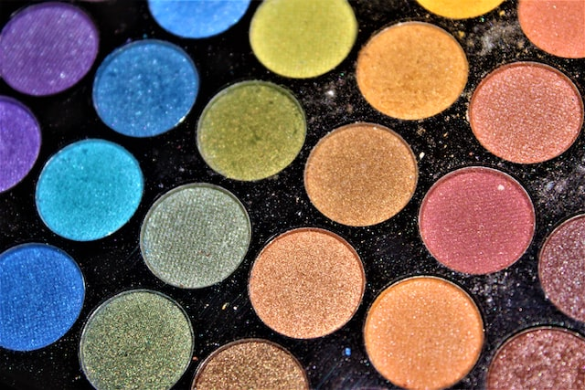
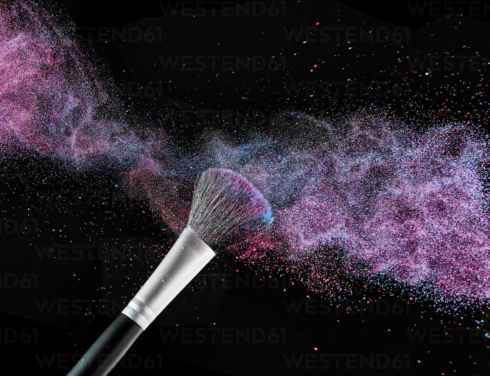

Static Graph:
For the static graphs, I want to implement two bar graphs one horizontal and the other vertical. To demonstrate the different ways in which the data set can be displayed the horizontal bar graph works better for data that have long names and the vertical one works more for those that have shorter names for what is being displayed especially on the x-axis. I chose graphs that would give the best display for the data and is readable and eligible to the user as well as easy to understand. In the assumption that the user has encountered bar graphs before and therefore would easily understand how to read the graph. The axis of the graph will be labelled accordingly to the names of the data displayed and the numerical values and a heading will also be provided to give context to the user to what is being displayed.

Retrieved from:https://www150.statcan.gc.ca/n1/edu/power-pouvoir/ch9/bargraph-diagrammeabarres/5214818-eng.htm

Retrieved from:https://depictdatastudio.com/when-to-use-horizontal-bar-charts-vs-vertical-column-charts/
Interactive Graph:
Similarly, to the static graphs, the interactive graph is a horizontal bar graph but on this graph, the user will be able to interact with the graph. The user will be able to hover over the bars to reveal new information such as the price of that specific makeup product displayed. See example below:

Retrieved from: https://stackoverflow.com/questions/65495845/highlight-highcharts-bars-on-mouse-hover-events
Data-Art:
For the data art, because my data is based on makeup, I want to bring to life the idea of makeup and what it represents. For beauty, art, etc essentially the aim was to either have the data be set up in such a way that it would be able to draw or make a representation of either a face or makeup product such as a brush. Please direct to Blog post 4 for more information and other ideas.
Although I recently stumbled upon a new form of data art on D3 which involves particles. For my data art I implemnted a canvas consisting of scattered particles of 4 different colours. My data across my site is all related to make up for my data art I retrived the API and specfied it to have an array of 4, the data consists of a list of 4 different eyeshadow pallettes from maybelline each of which I assigned a colour. Each of the products has a colour assigned to it according to its number. And each of those colours are present as part of the particles on the canvas. From first look the artwork seems like a constellation of different coloured stars. But I chose this artwork because it reminded me of what eyeshadow looks like when it spills on the outer borders of the pallette see picture example below which is usually black. And I wanted to give a more magnified look of that where the black canvas and background of the artwork represents the outer borders of the eyeshadow pallette and the small colourful particles represent the eyeshadow particles that fall on the border, representative of abstarct art.
Retrieved from: https://unsplash.com/
Data-Art Exam:
For my Data-Art Exam I wanted to give a more deep but similar experience to that of my intial Data-Art. For this Data-Art I implemented a canvas again but here the user can paint on the canvas using their mouse therefore making it interactive. This Data-art allows the user to imagine the data in a more literal sense the movement of the mouse depicts taht of someone appllying makeup or creating an artwork, and doing ones makeup is a form of artwork and makeup products themselves can be utilised in realife to create art. See Examples below:
.jpg)
Retrieved from: https://unsplash.com/
The colours from the brush are reprsentative of an eyeshadow pallette as the user paints the particles get smaller and whatever it is they have drawn is also gone. The user can move the mouse around and bursts of colour particles will appear with a trail and disappear as they get smaller and float around. The reason I made it this way is to show the temporaility, function and beauty of makeup. The colours show the beauty of the makeup, the blank canvas acts as a face, or surface one would apply makeup up on. The particles get smaller and disappear to show the temporality of makeup; makeup comes of very easily and doesnt stay forver and once its gone you are left with a "blank canavs". The user therefore can drag their mouse and create their very own temporary piece of artwork. When the particles get smaller and start to float and disappear they represent that of eyeshadow powder when it falls of the brush perhaps because there was too much. see example below The number of particles bursts per colour for PartcilesArray is equal to that of the data length from the API which is a list of eyeshdaow pallettes from Dior. >
Retrieved from: https://www.westend61.de/en/imageView/RAMF000005/coloured-make-up-powder-and-beauty-brush-in-front-of-black-background
.jpg)
Retrieved from: https://unsplash.com/